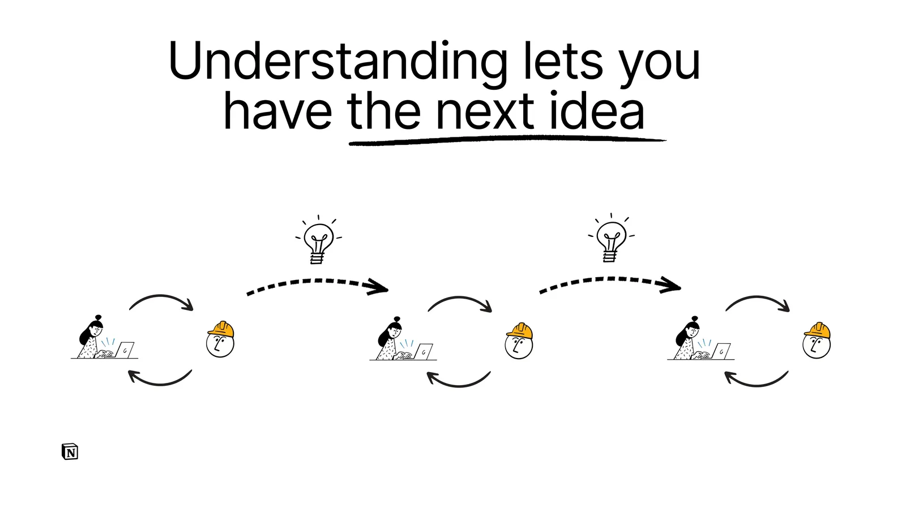
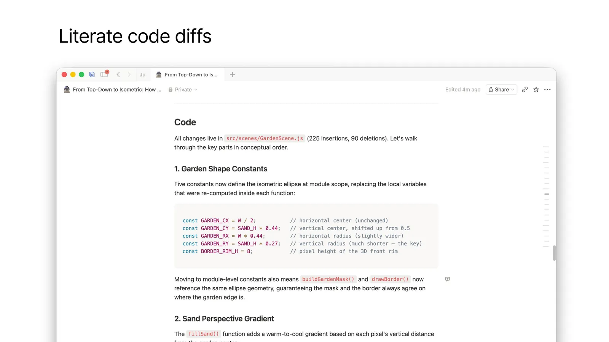
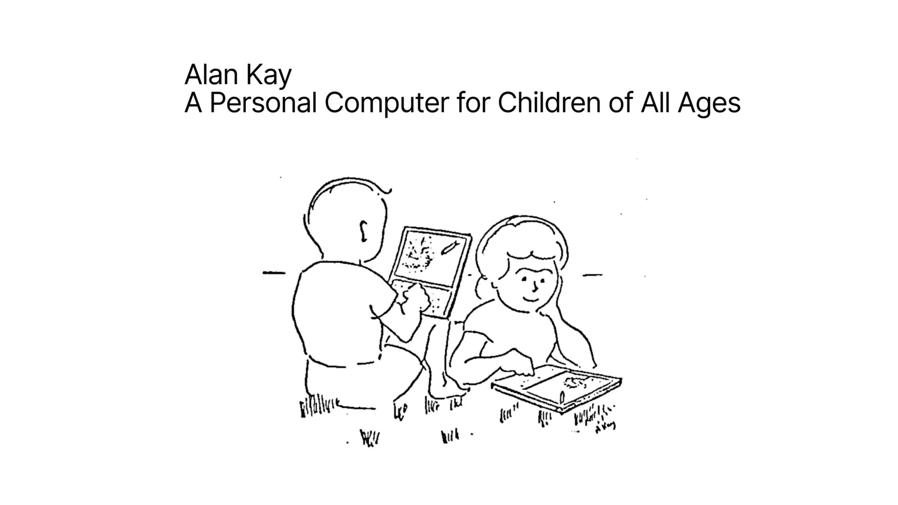

问题是二元的：它做对了吗？人站在循环外，负责最后的 thumbs-up / thumbs-down。
Geoffrey Litt2026-07-02Human × AI
代码越写越快，理解为什么成了新瓶颈？
Agent 可以越来越自主地写代码、跑测试、验证结果。但一个项目不是一次性交付，而是人与 Agent 共同推进的许多轮循环。人若失去系统的心智模型，也会失去提出下一个好问题的能力。
AGENT OUTPUT92
HUMAN UNDERSTANDING42
这不是原文测得的数字，而是一张关系图：当产出速度越过人的理解速度，瓶颈从“写出来”转移到“跟得上”。
TL;DR / 30 秒
问题：Agent 写得越来越快，人还有必要理解代码吗？作者答案：有必要，但主要不只是为了验收正确性，而是为了继续参与创造。办法：让 Agent 同时生成解释材料、理解测验和可操作的微型世界，并把这些产物放进团队共享空间。边界：这是作者的实践与教育类比，不是证明某种流程必然提高工程指标的实验。
理解的目的，不只是给结果打勾
许多支持“人要懂代码”的论点仍停留在检查 Agent：看它是否符合规格、架构是否合理、最后给出通过或拒绝。但 Litt 认为，这个答案会随着 Agent 自我验证能力提升而越来越不够。
问题是生成式的：理解了这套系统后，我们接下来还能想到什么？人留在创造循环里。
项目不是“给 Agent 一个任务，收回一个答案”的单循环。它由许多次来回构成：实现带来新认识，新认识催生下一步构想。你脑中拥有的概念、边界和因果关系，决定了你能否流畅地提出下一轮。
因此，理解不是交付后的审计成本，而是下一次创造的输入。如果短期一直跳过理解，作者把它连接到 cognitive debt：眼下似乎节省时间，后来却可能连“项目为什么变成这样”都说不清。

没有心智模型
你可以继续给指令，但更容易只能要求“再优化一点”“再修一下”，难以判断系统还能朝哪里演化。
拥有心智模型
你知道现有概念、约束和取舍，因此能提出带方向的新问题，并与 Agent 共同推进设计。
把教育工具搬进 Agent 工作流
Litt 的关键转折是：既然“如何帮助人理解”不是新问题，就不必只盯着代码审查工具。我们可以从教育中借用解释、主动回忆、可操作环境与共同建构知识的办法。
01
解释材料：先建立直觉，再进入代码
Agent 完成工作时，不只交付 diff，也可以交付一份精心组织的 explainer。作者每天使用自己的 /explain-diff skill，把改动组织成 HTML、Markdown 或 Notion 文档。
1
补背景
先说明原来有什么、系统如何工作，避免读者从改动中反推上下文。
2
直觉先行
先讲目标和核心概念，例如先理解等距投影，再看花园场景的代码。
3
可操作图解
允许拖动、试错和观察状态变化，让抽象关系变成身体可感的反馈。
4
文学化 diff
按概念顺序讲改动，穿插上下文和代码，不按文件名字母顺序倾倒补丁。

02
理解测验：给工作流加一个限速器
阅读很容易制造“我已经懂了”的错觉。作者受 Andy Matuschak 和 Michael Nielsen 的启发，在 explainer 结尾放五道题，并给自己定规则：答不过就不把代码发给别人，审查别人代码时也一样。
Quiz as speed regulator原文概念示意
快
慢
测验不是为了证明你聪明，而是机械地暂停一下，问自己：我真的能从记忆中重建关键关系吗？
03
微型世界：不要只看答案，进去生活一会儿
受 Seymour Papert “生活在 Mathland” 的教育思想启发，作者让 Agent 写出帮助自己理解其他代码的小工具。关键不是让 Agent 替他调试，而是让自己在一个被精心布置的环境里操作、观察、建立直觉。
最重要的原文例子：当 Claude 写出的迁移脚本难以审查时，作者没有要求更多解释，而是让 Claude 把迁移变成一个自己能逐步操作的“游戏控制台”。Agent 产出的不是最终答案，而是人类理解其他代码的媒介。
计算机最初的愿景，本来就不只是替人做事
文章最后把问题从“如何理解 Agent 写的代码”推到更大的尺度：AI 让模拟、解释和交互工具变得便宜，这也许让计算机重新成为一种帮助人理解复杂世界的媒介。

“The point was always to augment, not just automate.”
“把人移出循环”不是唯一未来。工具设计得当时，我们也可以更深地进入循环：更快得到可操作的解释、更早发现自己没懂、更容易在团队里建构共同模型。
这也是作者乐观的来源。AI 的价值不只在于代替人生产结果，也在于帮助人制造以前太贵、太慢、太难做的学习环境。
把“理解”变成每轮交付的一部分
如果把这篇文章压缩成一个可执行原则，它不是“所有代码都逐行手审”，而是：每当 Agent 提高产出速度，也同步投资能让人追上的理解产物。
BEFORE CODE先补齐背景与直觉
让解释从系统原状、目标和关键概念开始，不要求读者直接跳入 diff。
BEFORE SHARE用回忆检验理解
设置少量高质量问题。只有能从记忆重建关键因果，才算真正跟上。
WHEN ABSTRACT把系统做成可操作环境
让人亲自推进状态、观察反馈。把 Agent 的代码生成能力用于制造理解工具。
这篇文章的适用边界与来源说明
原文是 Geoffrey Litt 在 2026 年 7 月 AI Engineer conference 演讲的文字版，内容以个人实践、教育思想和产品例子为主。页面没有把它包装成经过实验验证的通用工程规律。
本页依据原文 HTML 全文、35 组演讲段落与幻灯片结构整理；使用了原文的 3 张幻灯片和 2 段演示视频。本页中的 “92 / 42” 仅为解释速度差的示意数字，不是原文数据。